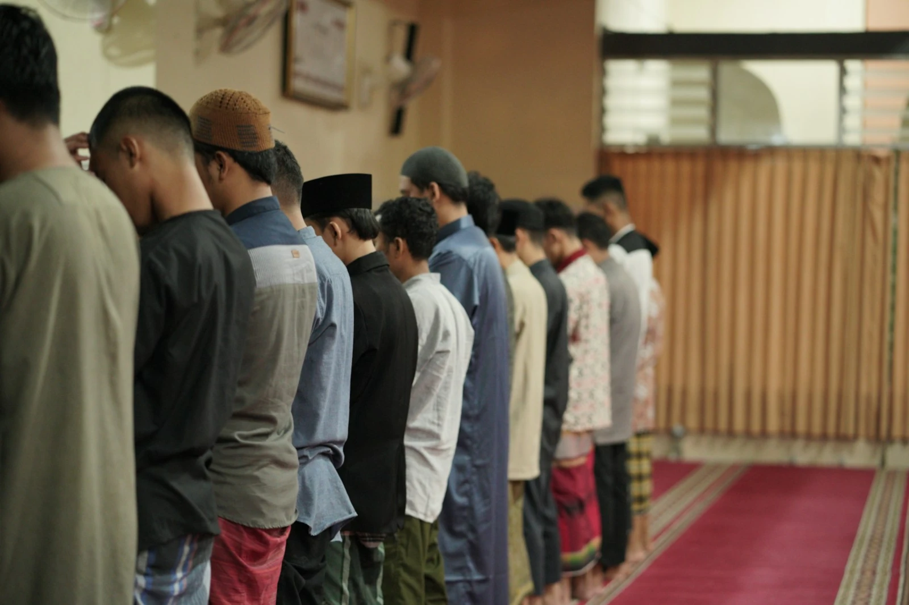

Ushering & hospitality
Welcoming worshippers and guests and helping Friday run smoothly across our three Jumu’ah congregations.
Jumu’ah times →
This masjid runs on volunteers. Even a few hours a month, given for the sake of Allah, changes what we are able to do.
Photo: Masjid Pogung Raya / Unsplash
Ways to serve
Welcoming worshippers and guests and helping Friday run smoothly across our three Jumu’ah congregations.
Jumu’ah times →Supporting our madrasah, adult classes and Arabic classes.
About classes →Helping prepare and distribute food and practical support for local families in need.
Lend a hand →Mentoring and youth activities. A Working with Children Check (WWCC) is required.
Youth programs →Helping host school and community groups, showing guests the masjid and answering their questions about Islam.
Visitors & questions →Legal, accounting, design, IT, translation and more — lend your profession to the masjid.
Offer your skills →Good to know
No experience is needed for most roles — we will show you the ropes.
Ushering, teaching, food and welfare, youth, welcoming visitors, or professional skills.
Email or call the office with a little about yourself and where you’d like to help.
The office will reply as soon as we can — and show you the ropes.
وَمَن تَطَوَّعَ خَيْرًا فَإِنَّ ٱللَّهَ شَاكِرٌ عَلِيمٌ
“And whoever volunteers good — then indeed, Allah is Appreciative and Knowing.”
Working with children? A Working with Children Check (WWCC) is required for roles involving minors. The office can help you with the process.
Join the team
Email or call the office and we’ll get back to you as soon as we can.